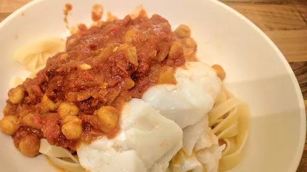

Curried cod
35 mins
Serves 4

An easy-to-prepare midweek one-pot with cod fillet, chickpeas, ginger and spices - it's healthy, low calorie and packed with iron too!
Ingredients
- 1 tbsp oil
- 1 onion, chopped
- 2 tbsp medium curry powder
- thumb-sized piece ginger, peeled and finely grated
- 3 cloves garlic, crushed
- 2x 400 g cans chopped tomatoes
- 400 g can chickpeas
- 4 cod fillets (about 125-150 g each)
- zest 1 lemon, then cut into wedges
- handful coriander, roughly chopped
Instructions
- Heat the
oil1 tbsp
in a large, lidded frying pan. Cook the onion1
over a high heat for a few mins, then stir in the curry powder2 tbsp
, gingerthumb-sized piece
and garlic3 cloves
. Cook for another 1-2 mins until fragrant, then stir in the tomatoes2x 400 g cans
, chickpeas400 g can
and some seasoning.
- Cook for 8-10 mins until thickened slightly, then top with the
cod4
. Cover and cook for another 5-10 mins until the fish is cooked through. Scatter over the lemon zest and corianderhandful
, then serve with the lemon wedges to squeeze over.
-
kcal
285
-
fat
6 g
-
saturates
1 g
-
carbs
22 g
-
sugar
10 g
-
fibre
8 g
-
protein
34 g
-
salt
0.4 g
www.bbcgoodfood.com
Short Link
Long Link